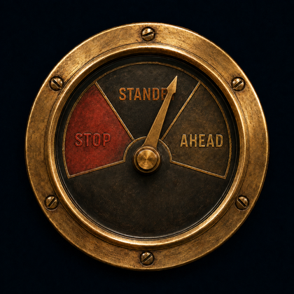

Helm ships Apache, PHP, and MySQL inside itself — nothing else to
download. This one-time step generates your server config and
initializes a fresh MySQL data directory. It takes under a minute.
Starting…
<<<<<<< HEAD
=======
HELM
>>>>>>> b1dbe9de81cd4382b23fe705ce2962b4202883ac
local server control — companion to Keel
Apache
:80

Checking…
MySQL
:3306
Checking…
Apache and MySQL aren't registered as Windows services yet. Helm needs to do this once — Windows will ask you to approve it.